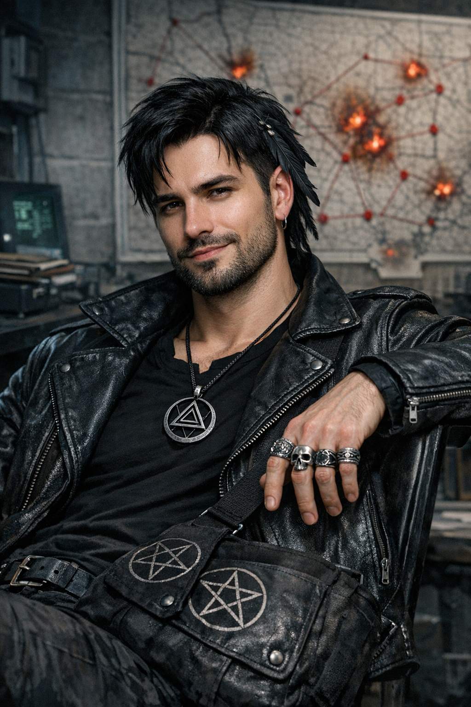

×

Ворон
- Полное имя: Неизвестно
- Вид: Человек
- Пол: Мужской
- Возраст: Около 27 лет
- Статус: Жив
- Род занятий: Актёр телевизионных шоу, лже-экстрасенс
- Первое появление: Глава 28
На данном сайте содержится информацию о произведении "От предвечной Тьмы к лунному Свету". Среди этой информации имеется большое количество сюжетных спойлеров.
«Где что горит — там всегда кто-то ошибся. Моя задача — понять, кто именно».
— Ворон во время своего представления в штабе.
Ворон — один из приглашённых «специалистов» по оккультным и экстрасенсорным наукам, привлечённый к работе оперативного штаба по поимке Чайного Мстителя. В ходе расследования был официально разоблачён как шарлатан и актёр, не обладающий реальными сверхъестественными способностями.
Ворон — молодой мужчина, чей образ тщательно выверен для создания мистического впечатления. Он носит кожаную куртку и сумку с изображением пентаграмм, переброшенную через плечо. Его руки украшены серебряными кольцами, а на шее висит амулет с треугольником, вписанным в круг. У него чёрные волосы, в которые вплетена пара тёмных перьев, и аккуратно подстриженная бородка.
В штабе Ворон вёл себя вызывающе и лениво, подчёркнуто дистанцируясь от официальных титулов и званий коллег (например, Магистра Сигизмунда), заявляя, что работает «без титулов». Он позиционировал себя как прагматичного специалиста, способного выявлять виновных в инцидентах по «ошибкам», которые они совершают.
Заявленные (фиктивные) методы анализа:
Ворон был приглашён в секретный НИИ вместе с Сигизмундом и Мереаной по распоряжению заместителя министра обороны для составления метафизического портрета преступника. Силовики изначально относились к его присутствию со скепсисом, называя подобных специалистов бесполезными.
Полковник Беловец провёл проверку способностей приглашённых экспертов, предложив им угадать содержимое закрытого ящика. Ворон провалил тест, не сумев определить, что внутри находится обычный канцелярский степлер. В ходе дальнейшей проверки биографии выяснилось, что он является профессиональным актёром, ранее снимавшимся в мистических телешоу. Несмотря на разоблачение, по приказу министра ему было позволено оставаться в штабе «для вида», однако его мнение в дальнейшем полностью игнорировалось руководством операции.